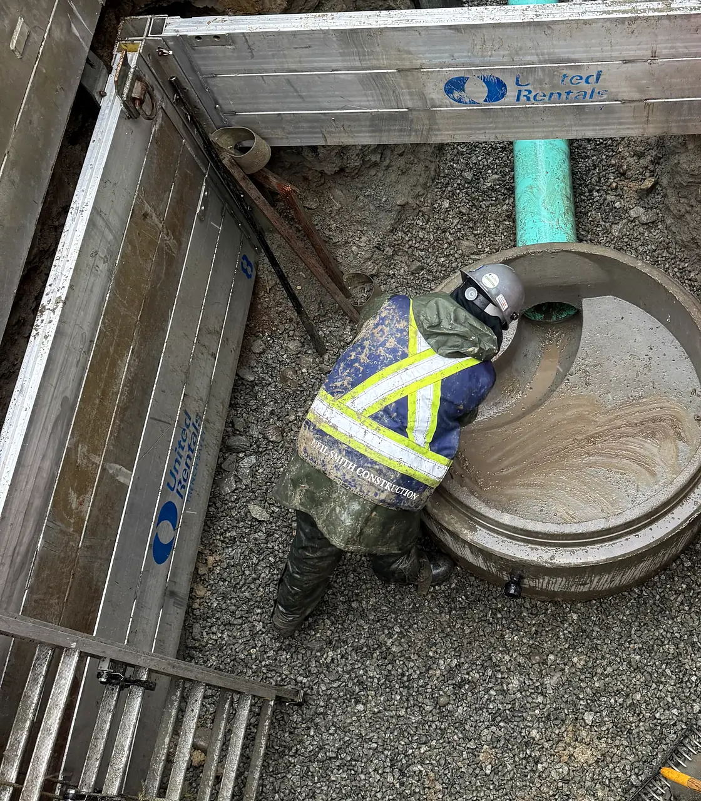

Health and safety
A program, not a poster.
Our Certificate of Recognition confirms an audited health and safety program. It is backed by people on site every day: a Construction Safety Officer, experienced superintendents and foremen, and crews who look out for each other.
- 01
COR certified
Our health and safety program is audited and certified under the Certificate of Recognition program of the BC Construction Safety Alliance.
- 02
Safety officer on our sites
A dedicated Construction Safety Officer monitors site activity, identifies hazards and works with every crew on compliance.
- 03
Toolbox meeting every shift
Every day starts with a toolbox meeting: the day’s tasks, the hazards that come with them and how we control them.
- 04
Excavation and shoring
Trench boxes, shoring and safe access on every excavation, checked before anyone goes in.
- 05
Locates before we dig
Pre-locates, BC 1 Call and soil sampling before the first sawcut, so we know what is in the ground.
- 06
Traffic and public safety
Traffic management plans, flaggers and fenced work zones keep the public, students and residents clear of the work.



Certificate of Recognition
Audited. Certified. Practised daily.
COR is awarded to employers whose health and safety programs meet the provincial standard, verified by an external audit. For owners and construction managers it means a contractor whose program is documented, audited and in use on every site.
Environment and community
Good neighbours on every site.
Our work happens in neighbourhoods, schoolyards and campuses. We plan it to protect the ground, the water and the people around us.
- 01
Erosion and sediment control
Sediment control measures on every site to keep soil and runoff out of storm systems and waterways.
- 02
Good Neighbour programs
Before we mobilize we review local bylaws and Good Neighbour programs for noise, dust, access and work hours.
- 03
Occupied sites
Schools, campuses and homes stay open while we work. At Queen Elizabeth Elementary, sewer work was scheduled over spring break.
- 04
Services kept running
On Kingston Road, every property stayed connected while new sewer and water services were built and transferred.
Contact
Prequalifying contractors?
We provide our safety program documentation, COR certificate and prequalification package on request.